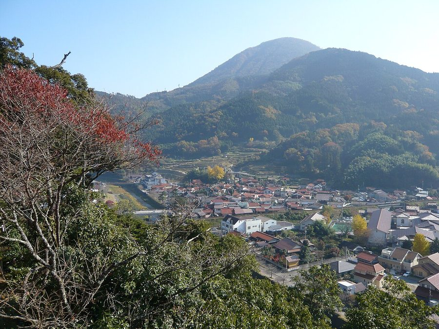
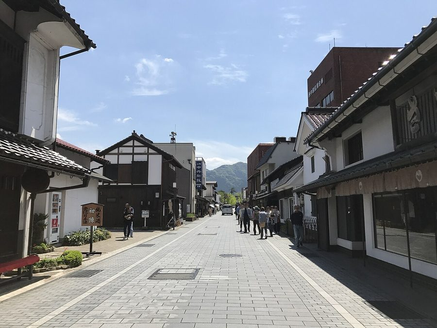
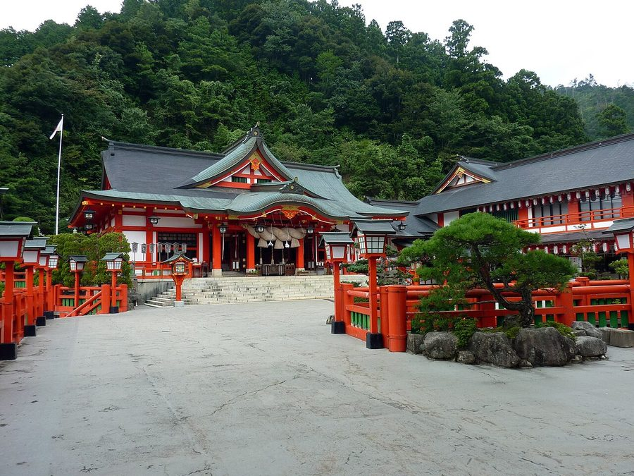
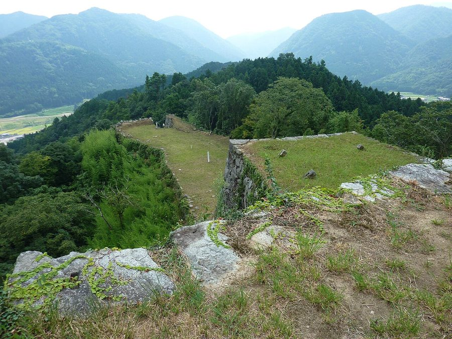

島根県鹿足郡津和野町のソフトクリーム・ジェラート・かき氷（5件）
寄り道スポット検索アプリ「ヨッテコ」の収録データから、島根県鹿足郡津和野町のソフトクリーム・ジェラート・かき氷を営業時間・料金つきで一覧にしました（2026年8月時点）。
島根県鹿足郡津和野町はどんなまち？
数字で見る🔍島根県鹿足郡津和野町
まちの横顔




- 地形と町並み: 津和野町は島根県の南西部、山間の小さな盆地に位置する町です。旧津和野町では川沿いの狭い平地に城下町が広がり、赤みを帯びた石州瓦の屋根の家並みが続きます。この町並みは小京都の代表格として知られ、津和野伝統的建造物群保存地区は国の重要伝統的建造物群保存地区に選定されています。地名の「津和野」は「つわぶきの生い茂る野」に由来するとされ、つわぶきを町の花に定めています。
- 観光: 津和野のメインストリートである殿町通りには、なまこ塀沿いにたくさんの鯉が泳いでいます。また、毎年7月末に行われる祇園祭では、街中を練り歩く鷺舞が津和野の代名詞となっています。鷺舞は1994年に国の重要無形文化財に指定され、2022年11月30日には「風流踊」のひとつとして無形文化遺産に指定されました。
寄り道充実度（全国偏差値）
偏差値・順位は、ヨッテコ収録データ（2026年8月時点・26,033件）を市区町村別に集計した施設数の全国分布（1,728市区町村）から毎回算出しています。カードを押すとカテゴリ別の分析に切り替わります。
アイスから見た島根県鹿足郡津和野町
アイスのお店を町内で数えると5件。全国882位タイで、1市区町村あたりの平均は7.7件です。——目立たないが、選べる店はある。
- かき氷を出す店は20%、全国水準（16%）の1.2倍。夏に立ち寄るなら、氷という選択肢が広いまちです。
- アイスクリームを出す店は60%、全国水準（39%）の1.5倍。なまこ塀に鯉が泳ぐ殿町通りと、街中を練り歩く鷺舞で知られる小京都の町。ソフトだけでなく、カップやコーンのアイスまで選べる品ぞろえです。
- 0%——ソフトクリームを置く店は、全国の62%に届きません。ジェラートやかき氷など、別の形が選ばれているということになります。
- 20%の店がジェラートを扱います。全国水準は14%です。素材を選んで作る一杯が、選択肢に入りやすいまちです。
出典: 施設データ=ヨッテコ収録データ（26,033件・2026年8月時点）。偏差値・全国順位・全国水準は全1,728市区町村の分布から毎回算出。 / 人口=総務省「住民基本台帳に基づく人口、人口動態及び世帯数」（2026年1月1日現在） / 面積=国土地理院「全国都道府県市区町村別面積調」（2026年4月1日時点） / 森林率=農林水産省「2025年農林業センサス（農山村地域調査）」市区町村別林野率（2025年、林野率（林野面積÷総土地面積）） / 年平均気温=気象庁「平年値（1991-2020年）」。市区町村の代表点（国土交通省「大字・町丁目レベル位置参照情報」）から最も近い観測点の値 / まちの解説=日本語版Wikipedia「津和野町」（https://ja.wikipedia.org/wiki/津和野町、2026年8月22日取得、CC BY-SA 4.0） / 写真=Wikimedia Commons（各キャプションに作者・ライセンスを記載）
曜日別の営業施設数
| 月 | 火 | 水 | 木 | 金 | 土 | 日 |
|---|---|---|---|---|---|---|
| 1 | 2 | 2 | 1 | 3 | 3 | 3 |
月・木曜日が最も休みが多く（各2件が定休）、年中無休は1件です。※営業時間データのある3件で集計
施設一覧
| 施設 | 営業時間 |
|---|---|
| CAFE SARAJYA （カフェ サラジャ） かき氷 | 12:00〜16:00 |
| TAKE OUT SHOP アイス 道の駅津和野温泉なごみの里で提供されるソフトクリーム。原材料には津和野産のまめ茶を贅沢に使用し、地域の特産品を活かした味… | — |
| ヤキマル アイス | — |
| 三松堂 津和野本店 ジェラート | 9:00〜18:00 |
| 木部の杜 ワルツ座 アイス | 12:00〜16:00（月・木休） |